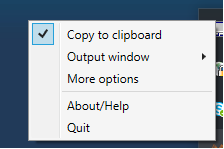
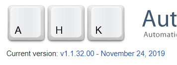
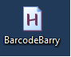
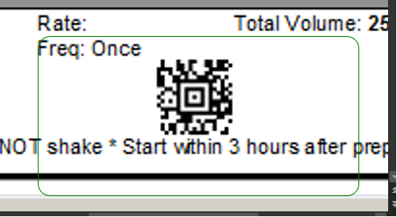
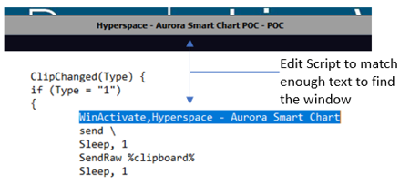

Virtual Barcode Scanner
This is a recommendation for a virtual barcode scanner that I use.
There are two parts:
1) A desktop virtual scanner that sends what it reads to the clipboard (unless you are lucky and the scanner sends to window correctly).
2) A shortcut using AutoHotKey that "sends" what is in your clipboard to your app (if needed) (Note: AutoHotkey works only on Windows).
Video Link
YouTube Link to Virtual Barcode Scanner VideoGetting started
- Download Virtual barcode reader: https://virtualbarcodereader.orpalis.com/download/
- Note that you turn the scanner “ON/OFF” by clicking this icon in your tray
- Make sure, with the scanner OFF, to right-click on the icon and check mark “copy to clipboard” 
- Although the Virtual barcode reader can “output window” the scan…it doesn’t work with Citrix in my experience. So download the current version of AutoHotkey: https://autohotkey.com/download/ 
- SAVE the BarcodeBarry file linked here anywhere (network drive, desktop, your documents, etc): Barcode Barry AutoHotkey File (v2.0)
- Simply double click/open the BarcodeBarry file (it will look like it did nothing, but it should be running in your tray) 
- You are the owner of a sweet fully integrated PC barcode scanner (configured with "/" prefix/suffix) if you see both of these icons running in your tray

Using your scanner
There are two ways to fire a scan (assuming you can NOT use the Orpaliss Scanner directly to the output window).
- Capture the scan code from your screen. You know it worked when the box turns green:

OR, you can directly copy and paste something to scan (a NDC, order ID, etc). Either way, the “barcode” is stored in your clipboard. NOTE: you do not need the virtualized scanner at all if you are just copying values. It is the running “H” application in your tray that is really submitting the scan. - Pull up Epic and fire off your scan using this keystroke combo: Windows button + b
- Fire it off over and over again. The keystroke will send off whatever is last stored in the clipboard.
Bonus
- For a more advanced version of Barcode Barry that links directly to a Citrix based window, download and edit this version of the script (I prefer the original listed in step 5 above): Barcode Barry Two AutoHotkey File (v2.0)
